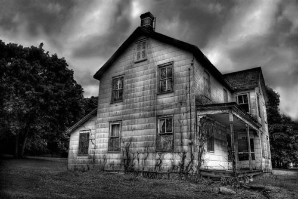

Rendez-vous avec la gagne
Le livre évènement de Bob Serial est enfin disponible ! De son enfance à Varsovie à l'appel à l'aide lancée par le président Obama face à la crise, découvrez l'homme qui se cache derrière la légende.

Chers amis,
Si un jour j'ai relevé le challenge de créer Serial Company, ce ne fut que dans un seul et unique but : amener la profitabilité et la rentabilité du leadership managérial au service du quotidien de chaque être humain. Cinquante ans après mes premiers succès, ce modèle de développement est toujours le même. C'est en restant fidèle à ses valeurs originelles que Serial Company continuera à vous accompagner chaque jour et chaque instant afin que chacun devienne le branch director de sa propre existence, étape indispensable pour atteindre l'immense joie du bonheur capitaliste. Si vous avez des doutes sur ma ténacité, sachez que Bob Serial gardera toujours le cap car à jamais convaincu que votre valeur fera notre valeur. C'est tout le sens que j'ai voulu donner à Serial Company.
Bob Serial
Business : A l'approche des fêtes d'Halloween, Serial Vegetables annonce le rachat de Global Pot', société spécialisée dans la productions de Potirons.
Politique : Le président Obama en appelle aux compétences de Bob Serial pour élaborer un nouveau plan de relance de l'économie mondiale. Ce plan est d'ores et déja baptisé le "Serial New Deal".
Média : Steve annonce dès à présent qu'il fera partie de l'aventure Serial Academy 2. C'est le premier membre du jury à offcialiser sa participation.
Le livre évènement de Bob Serial est enfin disponible ! De son enfance à Varsovie à l'appel à l'aide lancée par le président Obama face à la crise, découvrez l'homme qui se cache derrière la légende.
En signant avec Serial Movies, Chuck Norris a enfin trouvé un film à la mesure de son talent. Et ce film, c'est Stab4, la suite de la fameuse série de films d'horreur créée il y a près de 10 ans par Stacey.
Snoop Scratchy Scratch, le grand vainqueur de la Serial Ac prépare la sortie de son single chez Serial Music. Mais l'aventure ne s'arrête pas là ! Serial TV travaille déja d'arrache pied sur la Serial Academy 2.
Serial Camping, des vacances sans bling bling.
Kevin Johnson, director branch investment manager chez Serial Camping explique les raisons du succès : Serial Camping, c'est l'esprit Serial en toute simplicité. Ce que nos clients viennent chercher chez nous, c'est la convivialité d'un leadership décomplexé sur le marché de l'habitat temporaire et nomade. Notre plus produit ? Une sélection de lieux alliant confort, charme et authenticité.
Visite guidée d'un lieu mythique sélectionné par Serial Camping : le chalet Georgie Tobby.
[Lire la suite ...]